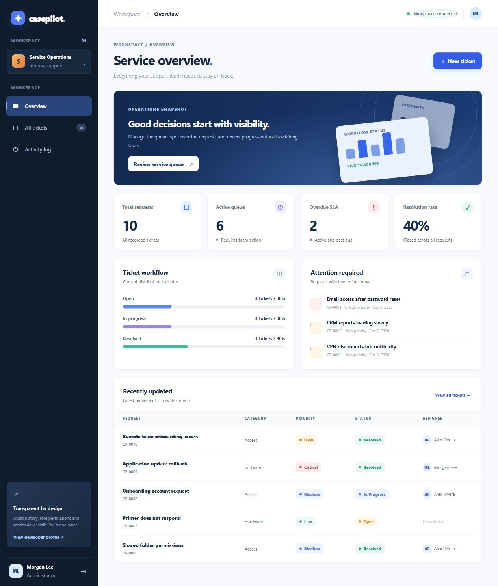

IT service operations · Python · Case study 02
CasePilot
A support queue with ownership, service deadlines and an activity trail. Run it locally without a cloud account.
Python / SQLite / JavaScript / HTTP

The problem
A support team needs to see which requests are pending, who owns them and what changed. CasePilot turns that queue into an inspectable workflow with explicit permissions.
The implemented workflow
- Sign in as the local administrator or support agent.
- Create and filter requests by status, priority and reference.
- Assign a request, investigate it and add an internal note.
- Resolve or reopen the request and inspect its audit history.
- Review service-deadline metrics and export a filtered CSV.
Architecture and decisions
The browser uses a small JavaScript client and authenticated HTTP endpoints. Python handles validation, sessions, CSRF and workflow rules. SQLite stores users, requests, comments and append-only application audit events. Changes and audit entries share a transaction. SQL pagination keeps the queue bounded.
Verified on Windows · 7 October 2026
What was checked
22 HTTP integration tests and 4 frontend tests passed on Windows. Coverage includes role permissions, password-hash migration, session rotation and expiry, Host/Origin validation, CSV formula protection, pagination and out-of-order search responses. A real browser completed create → assign → investigate → resolve; the 390px layout had no page overflow.
Verified on Linux · 8 October 2026
Async-response regression checks
All 22 HTTP integration tests and 10 frontend tests passed after correcting stale asynchronous responses. Regression checks cover superseded ticket selections, dashboard and detail responses after changing accounts, and delayed unauthorized or logout responses from an earlier session. Current-session unauthorized responses still return the user to sign-in.
Controlled deferred promises reproduce these races without timing sleeps. JavaScript syntax and diff checks also passed. This update adds automated regression evidence; the original Windows browser walkthrough above remains the recorded visual check. Read the verification notes ↗
Current boundaries
This is an AI-assisted portfolio demonstration with synthetic data, not a deployed client help desk. Sessions are in memory and the standard-library HTTP server is intended for local demos. A public service requires a production HTTP stack and HTTPS. Docker packaging exists but its runtime was not verified because the local daemon was unavailable.